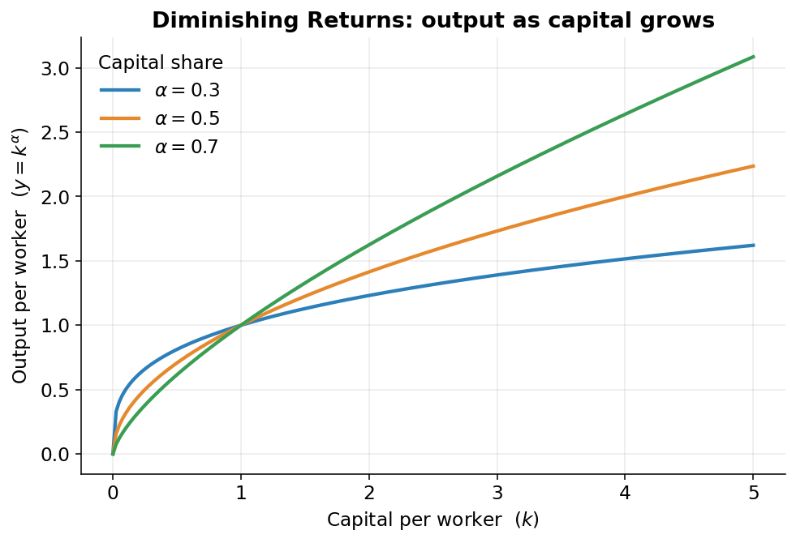

The Production Function: the Economy’s Engine
From a gap to an engine
On the last page we measured the output gap, the difference between what the economy actually produced and what it could have produced at full, sustainable use of its resources. That left a big question hanging: where does the “could have produced” number even come from? You can’t look it up anywhere. Nobody publishes the economy’s top speed.
So the model has to build it. And to build it, you need a rule that takes the economy’s ingredients and turns them into output. Economists call that rule a production function: a recipe that says, “give me this much of each ingredient, and I’ll tell you how much you can make.”
That recipe is the engine at the heart of this whole model. This page is about how it works.
Output is a dish; the ingredients are labor, capital, and know-how
Think about baking bread.
The loaf that comes out of the oven is your output, the thing you actually made. To get it, you needed three kinds of ingredient:
- Labor: the hours of work people put in. The baker kneading, measuring, watching the oven. In the economy, this is the total hours that workers put in.
- Capital: the tools and equipment you bake with: the oven, the mixer, the pans, the kitchen itself. In the economy, capital means machines, factories, office buildings, trucks, computers, and software.1
- Know-how: how good your recipe is. Two bakers with the exact same oven, the same flour, and the same hours can get very different loaves if one has a better technique. Economists call this total factor productivity, usually shortened to TFP, basically, how cleverly you combine everything else.
1 Capital is anything durable that helps you produce but isn’t “used up” in one go. A loaf of bread is output; the oven that baked it is capital.
The big idea is simple and intuitive: you get more output if you add more of any ingredient or if you improve the recipe. More workers, more ovens, or a smarter technique: any of them lifts how much you make.
The specific recipe this model uses has a name: the Cobb-Douglas production function. It’s the single most-used production function in all of economics, because it captures that “more inputs or better know-how means more output” intuition in one tidy line.
The recipe, written down
Here is the actual formula. Don’t worry about the symbols yet. We’ll translate every one of them into plain words right after.
Output is capital and labor, each raised to a power, scaled up by productivity: \[ Y = A \cdot K^{\alpha} \cdot L^{1-\alpha} \] where \(Y\) is output, \(K\) is capital, \(L\) is labor, \(A\) is total factor productivity (the recipe quality), and \(\alpha\) is capital’s share of income, about \(0.36\) in U.S. nonfarm business.
Reading it left to right:
- \(Y\) is output, the dish. In our case, the output of the nonfarm business sector, which is the part of the economy that isn’t farms or the government, roughly three-quarters of all U.S. production. It’s where this recipe really earns its keep.2
- \(A\) is total factor productivity, the recipe quality. A bigger \(A\) means you squeeze more output from the same workers and machines.
- \(K\) is capital, and \(L\) is labor, the two physical ingredients.
- \(\alpha\) (the Greek letter “alpha”) is the one piece that needs explaining.
2 The model treats the economy as six sectors. Only nonfarm business gets the full Cobb-Douglas recipe; the smaller sectors use simpler rules we’ll meet later.
Alpha: who gets which slice of the pie
When a business produces something and sells it, the money it earns gets split. Some of it pays the workers: wages and salaries. The rest goes to the owners of the machines and buildings, the people who put up the capital. That second slice is capital’s share of income, and that’s what \(\alpha\) measures.
In U.S. nonfarm business, \(\alpha\) is about \(0.36\). In plain terms: out of every dollar the sector earns, roughly 36 cents flows to the owners of capital, and the other 64 cents flows to workers as pay.
That’s also why the exponents in the formula add up the way they do. Capital is raised to the power \(\alpha\) (0.36), and labor is raised to \(1 - \alpha\) (0.64). The two exponents are just the two slices of the same pie, so by construction they add to 1.
Why exponents instead of plain multiplication? Because exponents let each ingredient “matter” in proportion to its slice. Since workers earn the bigger slice, labor moves output a bit more than capital does, dollar for dollar, and the \(0.64\) exponent bakes exactly that in.
More machines help, but less and less each time
Here’s a feature of this recipe that matches real life surprisingly well.
Imagine you give one office worker a second computer monitor. Nice. They can keep email open on one screen and work on the other. Real productivity boost. Now give them a third monitor. Still helpful, but less so. A fourth? Marginal. By the tenth monitor, they’re just decorating the cubicle. Each additional monitor adds something, but each one adds less than the one before.
Economists call this diminishing returns: piling on more and more of one ingredient (here, capital per worker) keeps raising output, but by smaller and smaller amounts. Figure 1 shows exactly this shape: output climbs as you add capital per worker, but the curve flattens as it rises.

Notice the curve bends but never turns downward: more capital is never bad, it just helps less and less. And the value of \(\alpha\) controls how sharply it bends: a bigger capital share means capital pulls more weight, so the curve rises higher before it flattens.
Double everything, and you double output
One more clean property. Because the two exponents add up to exactly 1, the recipe has what’s called constant returns to scale: if you double every ingredient at once (twice the workers, twice the machines, same know-how) you get exactly twice the output.
That’s the difference between adding capital per worker (diminishing returns, the flattening curve) and scaling the whole operation up evenly (constant returns, output just doubles). Build a second identical bakery next door, fully staffed and equipped, and you bake twice as much bread. Sensible.
The three ingredients, and what “potential” means
The recipe needs three numbers fed into it, and each one gets its own page coming up:
- Labor: total worker hours (page 4).
- Capital services: how much productive muscle the machines and buildings provide (page 5).
- TFP: the recipe quality, the leftover know-how (page 6).
But remember the whole point: we’re not building actual output, we already have that. We’re building potential output, the economy’s sustainable top speed. So the model feeds the recipe the potential version of each ingredient: potential hours (what people would work at full employment), potential capital, and potential TFP (the underlying trend, with temporary booms and busts smoothed out). Same recipe, ingredients set to “full health.”
The recipe, as the code actually runs it
Here is the exact block from aggregation.py that computes potential nonfarm-business output:
kshare = annual["kshare"]
log_qgdpnfbfe = (
kshare * np.log(icap_lag)
+ (1 - kshare) * np.log(ilabfe)
+ np.log(annual_potentials["iprodfe"])
+ gdpconst
)
qgdpnfbfe = np.exp(log_qgdpnfbfe).rename("qgdpnfbfe")It looks different from the tidy formula in Note 1, but it’s the very same recipe, just written in logarithms. Here’s why anyone would do that.
A logarithm (or “log”) is a math trick with one magical property: it turns multiplication into addition. The log of “\(a\) times \(b\)” equals “log of \(a\)” plus “log of \(b\).” So a recipe written as a chain of multiplications becomes a chain of simple additions, which is faster and steadier for a computer to handle. It’s like preferring to add up a grocery bill rather than multiply everything together in your head.
Watch the formula \(Y = A \cdot K^{\alpha} \cdot L^{1-\alpha}\) turn into the code, line by line:
kshareis \(\alpha\), capital’s share (0.36).icap_lagis the capital \(K\), last year’s capital services, since this year’s production runs on machines that were already in place.3ilabfeis potential labor \(L\), the potential worker-hours.iprodfeis potential TFP \(A\), the potential recipe quality.gdpconstis a fixed constant that simply pins down the units, so the index lands on the right scale (2009 dollars).
3 The capital is “lagged” by one year: you produce in 2016 using the factories and equipment that existed at the end of 2015.
The first line, kshare * np.log(icap_lag), is the log of \(K^{\alpha}\). The second, (1 - kshare) * np.log(ilabfe), is the log of \(L^{1-\alpha}\). The third, np.log(...iprodfe), is the log of \(A\). The code adds them because, in log world, adding is what multiplying becomes. Finally np.exp(...) is the “undo” button: it reverses the logarithm and hands back the plain output number, qgdpnfbfe: potential nonfarm-business output.
So the scary-looking code is nothing more than \(Y = A \cdot K^{\alpha} \cdot L^{1-\alpha}\), fed the potential version of each ingredient, and run through logs for the computer’s convenience.
Up next
We have the engine. Now we need to fill its tank, to actually measure each ingredient, at its “potential” setting. We’ll start with the one humans care about most: labor.